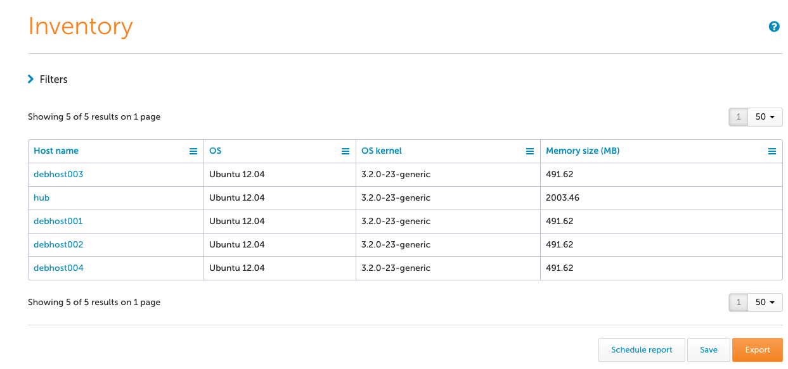
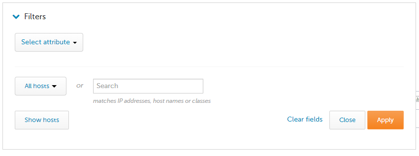
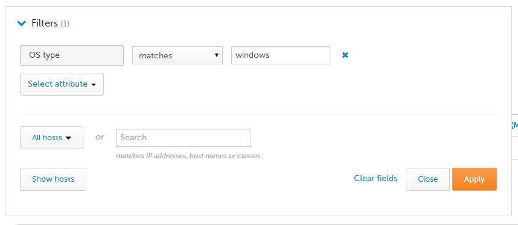
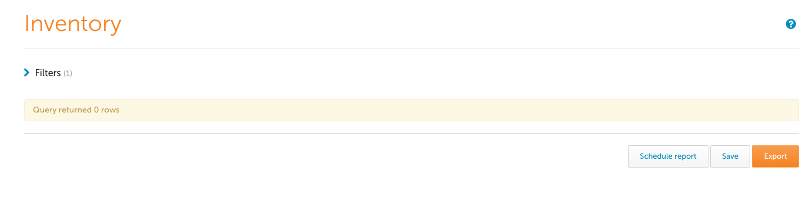

Reporting UI
CFEngine collects a large amount of data. To inspect it, you can run and schedule pre-defined reports or use the query builder for your own custom reports. You can save these queries for later use, and schedule reports for specified times.
If you are familiar with SQL syntax, you can input your query into the interface directly. Make sure to take a look at the database schema. Please note: manual entries in the query field at the bottom of the query builder will invalidate all field selections and filters above, and vice-versa.
You can query fewer hosts with the help of filters above the displayed table. These filters are based on the same categorization you can find in the other apps.
You can also filter on the type of promise: user defined, system defined, or all.
See also:
Query Builder
Users not familiar with SQL syntax can easily create their own custom reports in this interface. Please note that query builder can be extended with your custom data.
- Tables - Select the data tables you want include in your report first.
- Fields - Define your table columns based on your selection above.
- Filters - Filter your results. Remember that unless you filter, you may be querying large data sets, so think about what you absolutely need in your report.
- Group - Group your results. May be expensive with large data sets.
- Sort - Sort your results. May be expensive with large data sets.
- Limit - Limit the number of entries in your report. This is a recommended practice for testing your query, and even in production it may be helpful if you don't need to see every entry.
- Show me the query - View and edit the SQL query directly. Please note, that editing the query directly here will invalidate your choices in the query builder interface, and changing your selections there will override your SQL query.
Ensure the report collection is working
The reporting bundle must be called from
promises.cf. For example, the following defines the attributeRolewhich is set todatabase_server. You need to add it to the top-levelbundlesequenceinpromises.cfor in a bundle that it calls.bundle agent myreport { vars: "myrole" string => "database_server", meta => { "inventory", "attribute_name=Role" }; }note the
metataginventoryThe hub must be able to collect the reports from the client. TCP port 5308 must be open and, because 3.6 uses TLS, should not be proxied or otherwise intercepted. Note that bootstrapping and other standalone client operations go from the client to the server, so the ability to bootstrap and copy policies from the server doesn't necessarily mean the reverse connection will work.
Ensure that variables and classes tagged as
inventoryorreportare not filtered bycontrols/cf_serverd.cfin your infrastructure. The standard configuration from the stock CFEngine packages allows them and should work.
Note: The CFEngine report collection model accounts for long periods of time when the hub is unable to collect data from remote agents. This model preserves data recorded until it can be collected. Data (promise outcomes, etc ...) recorded by the agent during normal agent runs is stored locally until it is collected from by the cf-hub process. At the time of collection the local data stored on the client is cleaned up and only the last hours worth of data remains client. It is important to understand that the time between hub collection and number of clients that are unable to be collected from grows the amount of data to transfer and store in the central database also grows. A large number of clinets that have not been collected from that become available at once can cause increased load on the hub collector and affect its performance until it has been able to collect from all hosts.
Define a New Single Table Report
- In Mission Portal select the Report application icon on the left hand side of the screen.
- This will bring you to the Report builder screen.
- The default for what hosts to report on is All hosts. The hosts can be filtered under the Filters section at the top of the page.
- For this tutorial leave it as All hosts.
- Set which tables' data we want reports for.
- For this tutorial select Hosts.
- Select the columns from the Hosts table for the report.
- For this tutorial click the Select all link below the column lables.
- Leave Filters, Sort, and Limit at the default settings.
- Click the orange Run button in the bottom right hand corner.
Check Report Results
- The report generated will show each of the selected columns across the report table's header row.
- In this tutorial the columns being reported back should be: Host key, Last report time, Host name, IP address, First report-time.
- Each row will contain the information for an individual data record, in this case one row for each host.
- Some of the cells in the report may provide links to drill down into more detailed information (e.g. Host name will provide a link to a Host information page).
- It is possible to also export the report to a file.
- Click the orange Export button.
- You will then see a Report Download dialog.
- Report type can be either csv or pdf format.
- Leave other fields at the default values.
- If the server's mail configuration is working properly, it is possible to email the report by checking the Send in email box.
- Click OK to download or email the csv or pdf version of the report.
- Once the report is generated it will be available for download or will be emailed.
Inventory Management
Inventory allows you to define the set of hosts to report on.
The main Inventory screen shows the current set of hosts, together with relevant information such as operating system type, kernel and memory size.

To begin filtering, one would first select the Filters drop down, and then select an attribute to filter on (e.g. OS type = linux)

After applying the filter, it may be convenient to add the attribute as one of the table columns.

Changing the filter, or adding additional attributes for filtering, is just as easy.

We can see here that there are no Windows machines bootstrapped to this hub.
